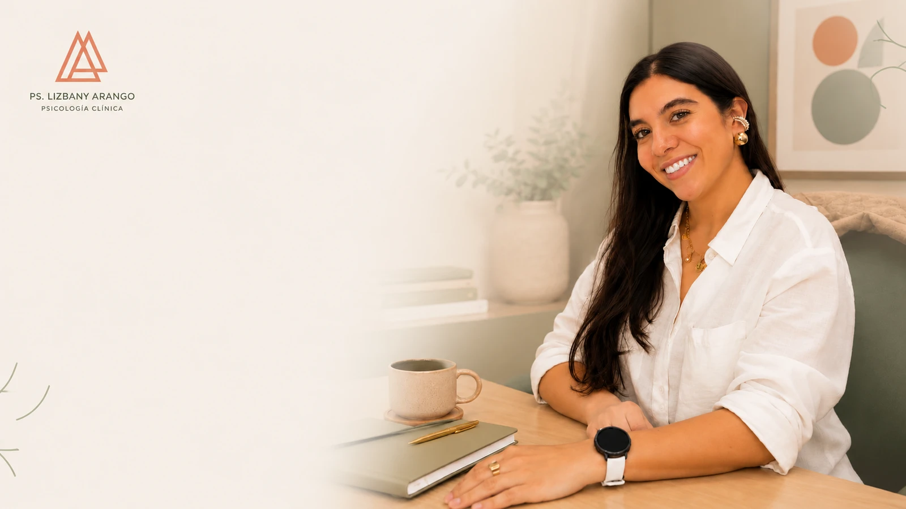

Ansiedad y preocupación
Cuando la mente se adelanta al futuro y el cuerpo vive en alerta constante.

Psicología clínica · Citas virtuales
Acompaño a personas de 20 a 40 años que desean comprenderse mejor, gestionar sus emociones y construir una vida más alineada con lo que realmente importa.
01 · Enfoque
Trabajo desde un enfoque cognitivo-conductual basado en evidencia científica, complementado con herramientas de las terapias contextuales. La idea no es darte respuestas prestadas, sino construir contigo un espacio donde puedas entender lo que sientes y decidir, con más claridad, hacia dónde quieres moverte.
¿Cómo puedo ayudarte?
Cuando la mente se adelanta al futuro y el cuerpo vive en alerta constante.
Cuando nada de lo que haces se siente suficiente, y el descanso se vive como una falta.
Límites, comunicación y vínculos que a veces pesan más de lo que deberían.
Procesos personales y profesionales que te piden convertirte en alguien distinto.
02 · Mi compromiso
Ofrecerte un espacio seguro, cálido y estructurado, donde puedas comprender, aceptar lo que sientes y tomar decisiones conscientes que te acerquen a la vida que deseas.
Reflexiones
“Tu mente te cuenta historias; no tienes que creértelas todas.”
“Si pongo límites en el trabajo, van a pensar que soy conflictivo.” — un mito que nos aleja de nuestro bienestar emocional.
“Cuando ya no somos capaces de cambiar una situación, nos encontramos ante el desafío de cambiarnos a nosotros mismos.”
03 · Modalidad
Sesiones de 60 minutos, por videollamada. El primer paso es escribirme: conversamos brevemente sobre lo que traes, resolvemos dudas sobre el proceso y agendamos tu primera cita.
04 · Contacto
Escríbeme cuando sientas que es el momento. No hay una forma correcta de empezar — solo el paso de hacerlo.
Este espacio no reemplaza atención de urgencias en salud mental. Si estás en riesgo o crisis, contacta a la línea de emergencia de tu país.